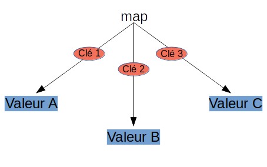

Pour gérer les arbres rouges et noir, j'ai utilisé la bibliothèque rb_tree ((https://github.com/mirek/rb_tree). Comme celle-ci est écrite en C, j'ai inséré avant et après les include guards ces morceaux de code:
#ifdef __cplusplus
extern "C" {
#endif
/* … */
#ifdef __cplusplus
}
#endif
Une std::map est un conteneur associatif qui stocke
des valeurs accessibles par une clé, qui doit être unique (sauf
pour la std::multimap). A chaque clé est associé une
ou zéro valeurs.
Structure d’une map
